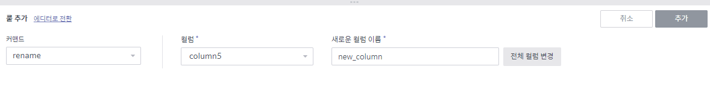

룰 편집¶
데이터 프리퍼레이션에서 가장 핵심적인 작업은 데이터를 변형(주로 정제)하는 룰(rule)을 만들어내는 것입니다. 이 변형 룰과 입출력 명세를 합쳐서 우리는 실제 데이터에 적용하거나, 또 비슷한 다른 데이터에 적용하거나, 이런 작업들을 스케쥴링합니다.
이제 룰을 만들고, 결과를 확인하고, 룰을 다시 변경하거나 삭제하는 일에 대한 설명을 하겠습니다.
먼저 룰 편집 화면의 구성은 다음과 같습니다.

컬럼 타입, 이름, 메뉴 버튼
룰 간편 생성을 위한 메뉴
적용된 룰 리스트 및 중간 삽입 버튼 (룰 사이에 마우스를 갖다대면 나옴)
Undo, redo가 가능한 경우 활성화
룰 세부 내용 입력 패널
컬럼 값 분포 및 distinct count, type mismatch 또는 null value 관련 정보 등
룰 생성하기¶
컬럼 헤더 메뉴를 이용하는 방법¶
컬럼 헤더를 클릭해서 대상 컬럼을 고릅니다.
기능 키를 이용해서 다수의 컬럼을 고를 수 있습니다.
OS에 따라 ^ 또는 ⌘ 키를 누른 채 클릭을 하면 해당 컬럼이 선택/해제됩니다. (토글)
Shift 키를 누른 채 클릭을 하면 범위가 선택됩니다.

선택된 컬럼 중 하나의 헤더에서
 아이콘을 클릭해서 헤더 메뉴를 연 후, 변환 명령을 선택합니다.
아이콘을 클릭해서 헤더 메뉴를 연 후, 변환 명령을 선택합니다.이 중에서 drop, settype 등은 즉시 실행됩니다.

추가 입력이 필요한 경우, 하단 명령 입력 패널을 통해 내용을 입력한 후 추가 버튼을 누릅니다.

몇몇 룰의 경우에는 분포도 막대를 선택해서 명령을 수행할 수도 있습니다.
분포도의 막대를 클릭하면 해당 범위를 조건으로 필터링 등을 실시할 수 있습니다(토글).
Type mismatch, null value 그래프를 클릭해서 해당 값들에 대해 조건을 걸 수도 있습니다.

하단 명령 입력 패널을 이용하는 방법¶
화면 하단 명령 입력 패널에서 변환 룰(커맨드)을 선택합니다.

추가 입력이 필요한 경우 내용을 더 입력한 후 추가 버튼을 누릅니다.
대상 컬럼을 고르는 입력 패널이 있지만, 이 경우에도 컬럼 헤더를 클릭해서 컬럼을 지정할 수도 있습니다.

룰 리스트 중간에 삽입하는 방법¶
화면 우측의 변환 룰 리스트에서 새 룰을 삽입하고자 하는 룰 경계에 마우스를 갖다대면 + 룰 추가 버튼이 생깁니다. 이 버튼을 누르십시오.

화면 하단 명령 입력 패널에서 변환 룰(커맨드)를 선택하고 추가 내용을 입력한 후, 추가 버튼을 누릅니다.
이렇게 룰을 중간에 삽입하면, 삽입된 위치 이후의 모든 룰이 영향을 받습니다.
이 때 정상적으로 수행될 수 없는 룰이 생기면, 빨간 색으로 표시되고 해당 스텝은 이전 스텝의 결과를 그대로 갖게 됩니다.
생성된 룰 편집하기¶
룰 수정¶
화면 우측의 변환 룰 리스트에서 수정하고자 하는 룰 위에 마우스를 갖다대면
 버튼이 생깁니다. 이 버튼을 누르십시오.
버튼이 생깁니다. 이 버튼을 누르십시오.
화면 하단 명령 입력 패널에서 변환 룰 내용을 수정한 후, 완료 버튼을 누릅니다.
룰이 수정되면 그 이후의 모든 룰이 영향을 받습니다.

룰 삭제¶
화면 우측의 변환 룰 리스트에서 삭제하고자 하는 룰 위에 마우스를 갖다대면  버튼이 생깁니다. 이 버튼을 누르십시오.
버튼이 생깁니다. 이 버튼을 누르십시오.
선택한 룰이 제거되면 그 이후 모든 룰이 모두 영향을 받습니다.

undo 및 redo¶
화면 우측의 변환 룰 리스트 상단에는 undo 및 redo 동작을 수행할 수 있는 아이콘이 있습니다.

어떤 명령 수행 후, 직전의 상태로 되돌리고자 할 때엔  버튼을 클릭하십시오.
버튼을 클릭하십시오.
데이터셋에 대한 변형(룰 생성, 수정, 삭제 모두 포함)이 직전의 상태로 되돌아갑니다.
해당 변형의 영향을 받은 다른 모든 룰도 직전의 상태가 됩니다.
다시 그 명령을 수행하고자 할 때엔  버튼을 클릭하십시오.
버튼을 클릭하십시오.
해당 명령을 그대로 다시 수행하는 것보다는
를 이용하는 것이 더 빠릅니다. 그 결과가 메모리에 저장되어있기 때문입니다.